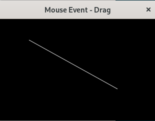

マウスをドラッグしたときの動作を指定します。
signal_handlerの引数は次表のとおり。
| signal_handlerの引数 | ||
|---|---|---|
| イベント | 引数 | 意味 | >
| signal_drag_begin | double start_x double start_y |
ドラッグ開始時のｘ座標の絶対座標 ドラッグ開始時のｙ座標の絶対座標 |
| signa_drag_update | double offset_x double offset_y |
ドラッグ途中のｘ座標の相対座標 ドラッグ途中のｙ座標の相対座標 |
| signal_drag_end | double offset_x double offset_y |
ドラッグ終了時のｘ座標の相対座標 ドラッグ終了時のｙ座標の相対座標 |
update:2025/1/2
#include <gtkmm.h>
#include <iostream>
class Screen : public Gtk::DrawingArea {
public:
Screen();
~Screen() = default;
int px0, py0, px1, py1;
protected:
void on_draw(const Cairo::RefPtr<Cairo::Context>& cr, int width, int height );
};
Screen::Screen()
{
set_draw_func(sigc::mem_fun( *this, &Screen::on_draw ));
}
void Screen::on_draw(const Cairo::RefPtr<Cairo::Context>& cr, int width, int height ) {
// BackgroundColor
cr->set_source_rgba( 0.0, 0.0, 0.0, 1.0 );
cr->paint();
// coordinate axis
cr->set_line_width(0.9);
cr->set_source_rgba( 1.0, 1.0, 1.0, 1.0 );
cr->move_to( px0, py0 );
cr->line_to( px1, py1 );
cr->stroke();
}
class MyWindow : public Gtk::Window
{
public:
Screen plt;
MyWindow();
virtual ~MyWindow() = default;
protected:
// Signal handlers
void on_mouse_drag_begin( double start_x, double start_y );
void on_mouse_drag_update( double offset_x, double offset_y );
void on_mouse_drag_end( double offset_x, double offset_y );
Glib::RefPtr<Gtk::GestureDrag> m_controller_b, m_controller_u, m_controller_e;
};
MyWindow::MyWindow() {
set_title( "Mouse Drag" );
set_default_size( 320, 240 );
m_controller_b = Gtk::GestureDrag::create();
m_controller_b->signal_drag_begin().connect(
sigc::mem_fun( *this, &MyWindow::on_mouse_drag_begin ));
plt.add_controller( m_controller_b );
m_controller_u = Gtk::GestureDrag::create();
m_controller_u->signal_drag_update().connect(
sigc::mem_fun( *this, &MyWindow::on_mouse_drag_update ));
plt.add_controller( m_controller_u );
m_controller_e = Gtk::GestureDrag::create();
m_controller_e->signal_drag_end().connect(
sigc::mem_fun( *this, &MyWindow::on_mouse_drag_end ));
plt.add_controller( m_controller_e );
set_child( plt );
}
void MyWindow::on_mouse_drag_begin( double start_x, double start_y ) {
plt.px0 = (int)start_x;
plt.py0 = (int)start_y;;
std::cout << "Begin:" << (int)start_x << "," << (int)start_y << std::endl;
}
void MyWindow::on_mouse_drag_update( double offset_x, double offset_y ) {
plt.px1 = plt.px0 + (int)offset_x;
plt.py1 = plt.py0 + (int)offset_y;;
std::cout << "Update:" << (int)offset_x << "," <<(int)offset_y << std::endl;
plt.queue_draw();
}
void MyWindow::on_mouse_drag_end( double offset_x, double offset_y ) {
plt.px1 = plt.px0 + (int)offset_x;
plt.py1 = plt.py0 + (int)offset_y;;
std::cout << "End:" << (int)offset_x << "," << (int)offset_y << std::endl;
plt.queue_draw();
}
int main(int argc, char* argv[])
{
auto app = Gtk::Application::create( "gtkmm4.example" );
return app->make_window_and_run<MyWindow>( argc, argv );
}
| Mouse event | |
|---|---|
| Console | Window |
|
$ Begin:63, 42 Update:0,0 Update:2,2 Update:21,19 Update:50,38 Update:61,45 Update:87,59 Update:131,80 Update:148,86 Update:154,86 Update:158,86 Update:161,86 Update:164,87 Update:165,88 Update:165,90 Update:166,90 Update:170,94 Update:174,96 Update:176,98 Update:177,98 End:177,98 |
 |